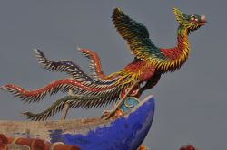

Cuando le llegaba la hora de morir, hacía un nido de especias y hierbas aromáticas, ponía un único huevo, que empollaba durante tres días, y al tercer día ardía. El Fénix se quemaba por completo y, al reducirse a cenizas, resurgía del huevo la misma ave Fénix, siempre única y eterna. El ave Fénix es muy fuerte, hasta el punto de cargar incluso elefantes. Según el mito, poseía varios dones, como la virtud de que sus lágrimas fueran curativas. El ave Fénix también tiene el poder de transformarse en un pájaro de fuego, y es del tamaño de un águila. Por su muerte de manera diferente, el ave Fénix se ha convertido en un símbolo de fuerza, de purificación, de inmortalidad y de renacimiento físico y espiritual, siendo una de las grandes figuras hechas en los tatuajes. Se cree que el ave mitológica apareció en el Oriente, y más tarde fue adaptada por los griegos. Según algunos mitos, vivía en una región que comprendía la zona del Oriente Medio y la India, llegando hasta Egipto, en el norte de África. Muy presente en la poesía árabe. Incluso la Iglesia católica posee una relación con el ave Fénix, los cristianos creían que el ave era un símbolo de la resurrección de Cristo. Se dijo en su momento que las cenizas del Fénix eran tan poderosas, que podrían incluso resucitar a los muertos.
 Regresar a Índice